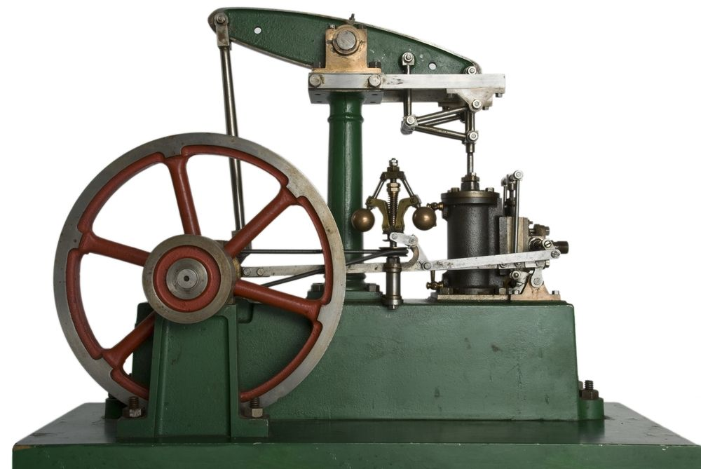

The Printing
Press: Invented by Johannes Gutenberg. It gave us a way to mass manufacture books, newspapers, and
even
art.

The Steam Engine:
It was the main reason the Industrial Revolution got so far, so fast. It let us mechanized factories,
completely changed transportation, and shifted the economy from agriculture to industrial.The Transistor:
It was developed at Bell Labs. It allowed electronics to shrink in comparison to the previous vacuum tubes
being used. This lead straight into the creation of smartphones, computers, and microprocessors.

 Tech Advancments
Tech Advancments